海邊路線
看海、吹風、慢慢煮東西
適合喜歡看海、拍照、吹風、慢慢煮東西的人。可安排北海岸、宜蘭海邊、新竹海線、苗栗海線等方向。亦可參考 苗栗海角樂園｜海線車宿與空曠感靈感。
行程不用排太滿，給自己留時間「停下來」享受。
露營車旅行最適合慢慢玩，不建議每天開太遠、排太多景點。建議一天安排 1 到 2 個主要停留點，把時間留給煮飯、休息、散步、拍照與享受風景。
露營車本身就是移動的小屋，所以真正的樂趣不在於跑多少地方，而在於「到了一個好地方，可以把車停下來，愉快地待在那裡」。
熟悉外接電源、充電、補水、洗澡與車內設備，之後再嘗試不同地點。
第一次租露營車，建議第一晚安排在有水電、衛浴與管理人員的露營區。這樣可以比較安心地熟悉外接電源、充電、補水、洗澡與車內設備，第二晚再挑戰比較自由的地點會更輕鬆。
依旅伴與風格挑選，先看看哪一類最對味。
適合喜歡看海、拍照、吹風、慢慢煮東西的人。可安排北海岸、宜蘭海邊、新竹海線、苗栗海線等方向。亦可參考 苗栗海角樂園｜海線車宿與空曠感靈感。
適合喜歡森林、涼爽空氣、營火、安靜過夜的人。可安排桃園、新竹、苗栗、南投等山區露營區。亦可參考 武陵農場高山露營車故事（山路與保暖靈感）。
適合家庭、小孩、第一次體驗露營車的人。建議選擇車程不要太遠、有廁所、有水電、有草地的露營區。也可開露營車參加 親子露營聚會／車友活動，和同好一起過節。
適合朋友聚會、生日旅行、情侶旅行。可以搭配網美露營套組、燈串、戶外桌椅，選擇風景漂亮的地方拍照。可參考 女生與情侶的自在露營車靈感。
露營車也可作為活動休息室、臨時更衣室、工作人員休息空間、比賽或戶外活動支援車。活動用途請另外詢問報價與送車安排。可參考下方 HOLA 品牌快閃與拍攝案例、 飛利浦行動電源廣告拍攝案例、 新竹眷村婚禮新娘休息室案例。
居家品牌 HOLA 曾以露營車結合 SNOW TOUCH 冰紗／涼感系列，做一連串戶外形象拍攝與實體快閃活動：車身換上白、淺藍等清爽視覺與品牌字樣，讓露營車同時是行動展間，也是可上車體驗的舒適空間。
在城市廣場等戶外場地，活動以「情緒中暑急救站」為主題布置：大型白色棚帳、品牌背板、涼感商品陳列與報到櫃台，露營車停駐在動線核心，工作人員引導民眾排隊參觀、上車感受內裝，把「把自然涼帶回家」的訊息，用可觸摸、可進入的行動基地說清楚；平面與影片則呈現車外草地休憩、車窗互動、額頭床天窗與車內涼感寢具等類露營／輕旅行情境，傳達夏日舒壓與居家的連結。
若您也想用露營車辦品牌快閃、記者會、戶外策展或拍攝支援，歡迎另洽檔期、車況、送車與報價；實際合作形式與車體包裝依專案約定為準。
國際品牌 飛利浦（Philips）在推廣行動電池、戶外儲能與便攜供電類產品時，也曾以與我們車款相近的白／淺藍雙色露營車作為廣告主角：空拍鏡頭跟著車行駛在蜿蜒山區公路，兩側是濃綠林相，遠山在夕陽金色時段被染成暖橘與深藍的層次——畫面要說的很直白：離開插座，生活與工作仍要繼續，而一台能進入風景的露營車，正是「把電帶進野外」的最佳視覺隱喻。
這類商業影片通常在車內、車外會搭配筆電、燈光、小家電或充電情境，凸顯行動電源在露營、公路旅行、戶外工作中的安心感；露營車則同時扮演移動布景與實拍空間，讓產品故事說得既生活化、又有公路電影感。
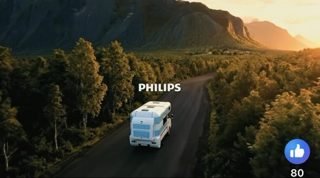
關於影片壓縮：若要在官網內嵌廣告片，建議另備已取得授權之 MP4 原始檔，再壓成 1080p、H.264／AAC、約 5～8 Mbps 之網頁用檔（本機已可安裝 ffmpeg 處理）。目前工作區未附該支影片檔，故先以上方劇照與文字說明。
有一對新人選在新竹將軍村（眷村文化園區風格）辦一場小而美、有故事感的婚禮：紅磚老建築、樹影與廣場氛圍都很適合拍照，但場地並非專用婚宴會館，現場往往沒有標準「新娘房」，也缺少可長時間吹冷氣、安心換白紗與補妝的獨立空間。
客人的解法很聰明：租一台露營車開進活動區，緊鄰儀式與宴客動線停放，把車當成行動新娘休息室——車內有鏡面與照明可運用、冷暖空調、簡易衛浴與沙發床，伴娘與新秘進出方便；迎娶、外拍與進場之間，新娘不必在臨時帳棚裡將就，隨時能回「自己的小包廂」整理裙擺、喝水、休息幾分鐘再上場。
這種用法也很符合特色場地婚禮的邏輯：景觀與文化感留在戶外與老宅，舒適與隱私由露營車補上；規模不大、溫度卻很高的日子，有一台可上鎖、可調溫度的車，整場流程會從容很多。
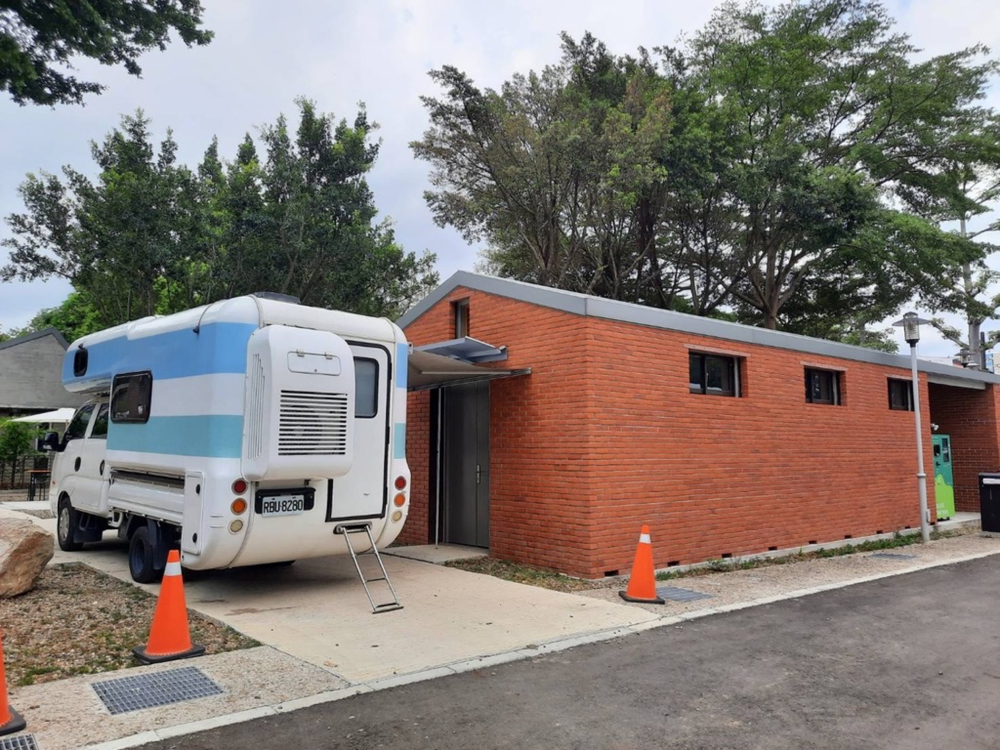
婚禮、外拍與活動之送車地點、停留時間與報價請另洽；各園區車輛進出與停放規定須遵守主辦與現場管理單位。
想把城市夜景與海線晨光放在同一趟旅程裡？下面用三張照片，串起一段真實感很強的露營車小旅行：先在市中心完成取車，沿著北海岸慢慢晃；用一頓海味的晚餐替白天收尾，夜深了把浪潮聲當背景音；隔天不用趕打卡，側身望向車窗，就能被日出與浪花叫醒。
① 城市出發，儀式感拉滿。傍晚在信義區附近完成交車，車旁就是台北天際線——這一刻很像對自己說：「接下來幾天，生活空間跟著海風走。」接著可以順路補齊食材與飲料，把冰箱當成移動小倉庫，晚一點開伙就不手忙腳亂。

② 北海岸的海味晚餐，慢慢吃。沿著海線往北，漁港小吃、熱炒海鮮或簡單麵攤都很適合當「第一晚的落地儀式」。吃飽後別急著趕路，找一處合法可停、視野舒服的海線空間或露營區，把桌椅拉出來吹風聊天；若只想安靜，也可以在車內開小燈，聽遠遠的浪聲整理照片。
③ 星空與浪潮，是露營車才有的「深夜房型」。海邊的夜晚常比城市更清澈：車門一開是風，車內是熟悉的床與衛浴動線。這種「帶著房間去旅行」的自由感，很容易讓人理解為什麼很多人租一次就愛上——下面這張，就是入夜後把車停進海風裡的氛圍。

④ 日出不必搶站位——窗框就是你的畫框。天亮時分，海面先亮，雲層被染成金橘色；你還能賴在枕邊幾分鐘，把咖啡煮上，再慢慢決定要不要下沙灘散步。下一張是從車內床上望向窗外的晨光（車窗與枕邊入鏡），與墾丁椰林空拍是完全不同的視角與情境。
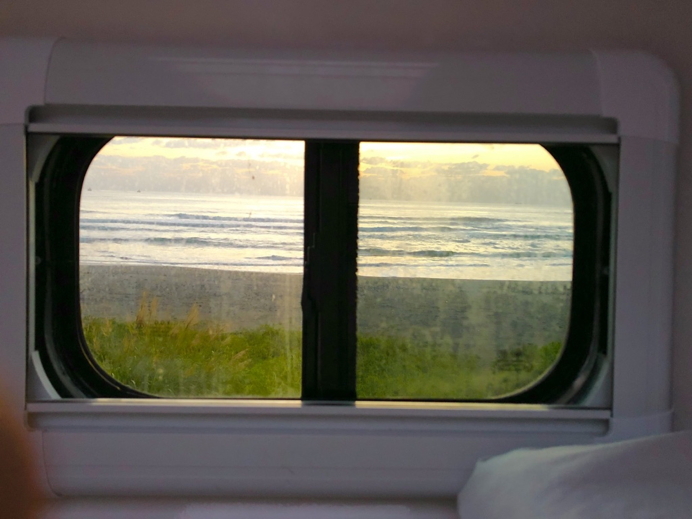
不少露營車旅人偏愛把車停進海線視野裡：台灣西海岸與北海岸一帶，常有較開闊的停車空間與長景，黃昏時分天色一層層轉藍，車尾門打開就是風與浪潮聲——下面這張在苗栗海角樂園附近氛圍的畫面，白藍露營車與風車同框，很像「車宿」兩個字該有的寧靜與自由感。
為什麼很多人說海邊特別適合車宿想像？相較部分山區道路腹地有限、視野常被林相遮擋，海線往往更容易找到停車後仍看得遠的場景（實際能否過夜、是否允許露營車，一律以現場告示與主管機關規定為準）。空間一開，心裡也會跟著鬆：想在車邊簡單開伙、拉椅子發呆，或偶爾放點音樂，比較不會有「擠在人家窗戶底下」的壓力。
聲音與鄰居距離，也是實務考量。山區谷地聲音容易沿坡傳遠，深夜若使用外置發電機或較大音量，有時會打擾到遠方的住家或其他營位；海線在風浪聲與較開放的環境下，旅人較常感到心理餘裕——但這不代表可以肆無忌憚：音量、時段、與他人的距離仍要自律，並遵守噪音相關法規與園區／道路管理規定。
山線當然也有無可取代的美：森林、雲海與涼爽夜氣。此段只是分享海邊車宿常見的體感與規劃思路，實際行程仍請依天候、路況與預約時說明安排。
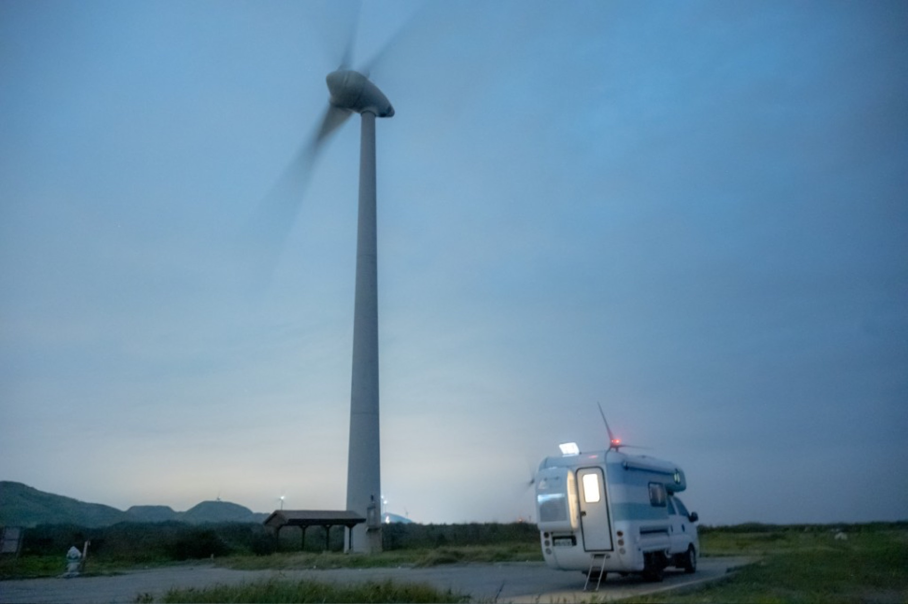
有時候最棒的旅行，就是不急着打卡，但每天都有事可做。下面這段是依真實交車情境發想的行程故事：三個大男生從台北市中心領到露營車，把衝浪板與行李塞進「會移動的基地」，沿著海線與山線把台灣繞一圈——說的是外國人在台灣也能很自在的兄弟旅行。
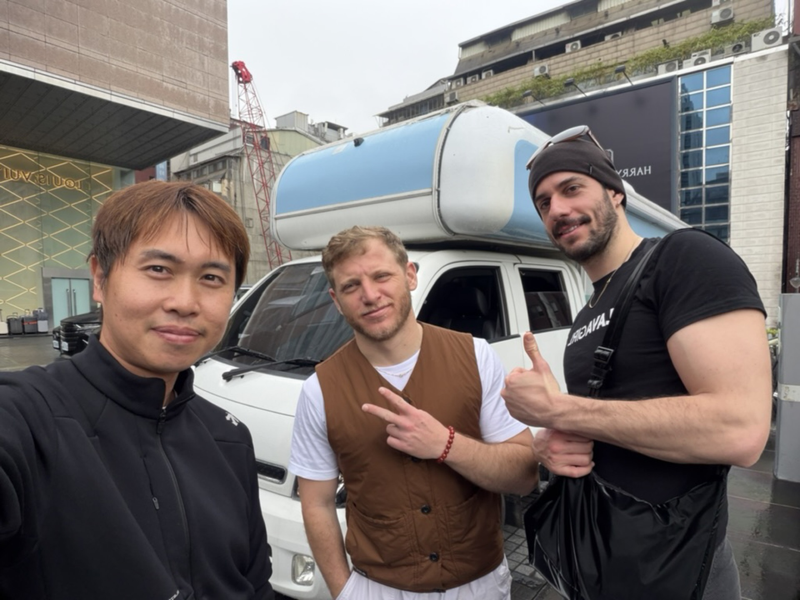
Day 1｜台北，領車日。約在晶華酒店附近交車，先把露營車當成大型行李艙：防寒衣、板子、補給一箱箱上車。傍晚不硬趕路，沿北海岸或東北角找能吹風的停車點，第一晚用海風當開場白——車上煮個泡麵也像樣。
Day 2–3｜宜蘭、花蓮，海是主場。把時間留给烏石港、外澳這類浪點與沿海公路；累了就開到清水斷崖、七星潭發呆拍照。露營車的好處是：沖完浪不必急着找飯店，先沖淡身上的鹽，再決定要不要進城吃夜市。
Day 4–5｜台東、墾丁，把南國曬成古銅色。沿台 11 線慢慢晃，或直衝恆春半島找浪；南灣、佳樂水一代常有「今天浪好不好」的討論，三個男生剛好一台車、一個副駕看浪、一個負責喊餓。夜裡車泊聽海，比誰的鼾聲像引擎。
Day 6｜往西回頭，用小吃當凱旋曲。北上途中拐去台南吃牛肉湯與小卷米粉，或到嘉義補個火雞肉飯——環島最後幾百公里，用味覺把台灣再記一輪。
Day 7｜回台北，還車前把故事收好。洗車、加油、把沙清乾淨；最重要的是，手機相簿裡多了一整排「兄弟自拍＋浪」與「車門一開就是海」的畫面。這種旅行不奢華，但很自由：誰說男生團一定要跟團？有露營車，就像帶着客廳與床位環島。
高山不是露營車的禁區——穩穩開、慢慢轉，很多客人會把武陵農場排進山線行程：一路爬坡、穿霧、看林相變化，車子就是你的移動基地；進到營區或木棧板營位旁，不用大費周章搭大帳，把外接電、桌椅與小燈串整理好，就能開始拍照、縮時、錄下雲霧與夜色，把大自然收進記憶與相簿。
上山這一段，其實很「露營車友善」。這台車本就是為長途與多元路況設計，只要依速限與彎道節奏行駛，注意會車與路肩空間，就能帶著床位與廚房一起抵達海拔較高的風景。天氣轉冷、路旁樹梢掛滿霧淞或薄霧時，窗外像銀白仙境——這時候最慶幸的不是帳篷，而是轉身就能回車上關門、開暖氣。
到點之後，重點是「輕鬆進入狀態」。車停穩、側門與後艙打開，營位邊的木棧板與小網室裡點上暖色燈泡，人在桌邊張羅熱食；外頭是藍調夜幕與山風，車內則是冷暖空調與熟悉的動線——孩子加外套、大人端湯碗，誰也不用硬扛寒風排隊等公共設施。這就是很多人說的：露營車旅行，是把舒適帶進風景裡，而不是用意志力對抗天氣。
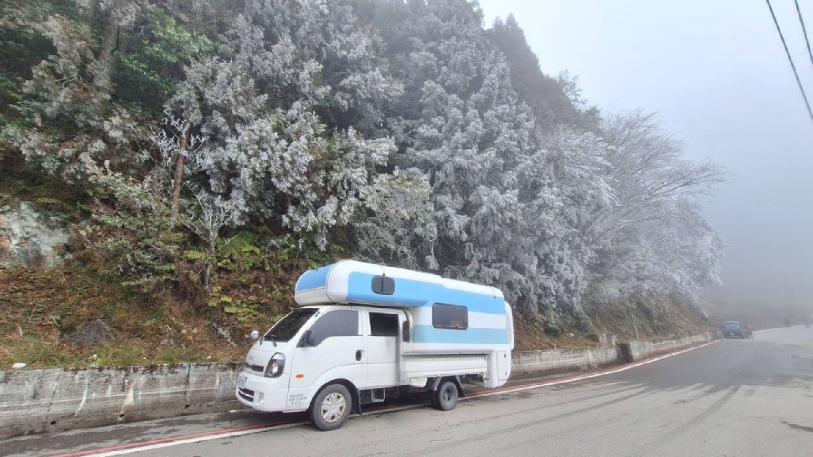
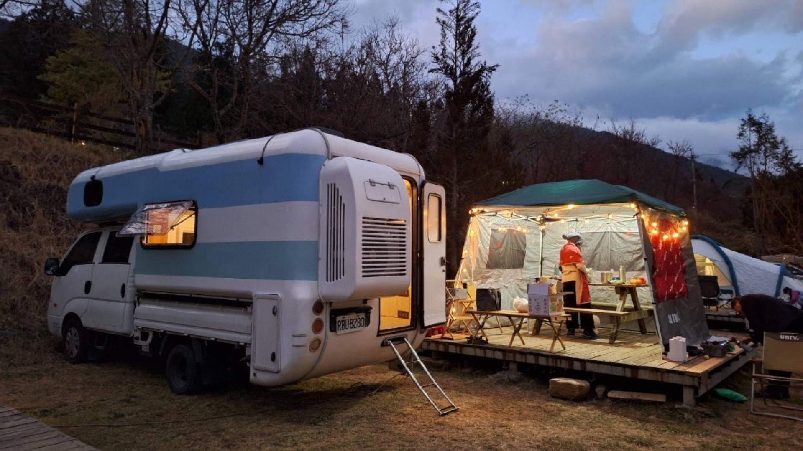
南國海風、椰林與海岸線，最適合把露營車當成移動小屋，慢慢玩、慢慢拍。
墾丁這一帶海藍、沙灘、椰林與草原一次打包，開露營車可以依心情換停靠點：白天玩水、傍晚開伙看落日，夜裡在車上休息聽海。以下兩張照片是墾丁海線露營車氛圍的靈感參考，實際路線與合法停靠仍以現場與預約時說明為準。


以下為實際客人出遊畫面參考：親子、好友揪團或情侶慢遊都適合；豪華露營車搭配戶外開伙、投影與夜景，容易拍出滿意照片、累積旅行好回憶。


露營車旅行不一定是「只有自己一台車」——很多人會租好車、開進營區，參加露營社團、親子團或車友揪團的聚會：白天手作、晚上燈串與熱食，孩子跑草地，大人聊天顧火，你的車就是私人休息室與小廚房，玩累了隨時回車上沖洗、躺平。
下方拼貼紀錄了一場聖誕主題的戶外聚會氛圍（畫面中可見「露營小 親子露營團」等社團布置）：小朋友用落葉、枝條做花圈與麋鹿，大夥兒圍著長桌做活動，還有薑餅屋 DIY；入夜後帳篷與樹叢掛滿燈飾，白色露營車停在一旁，像一座會發光的行動基地——別人搭帳，你帶房間來，社交與私密兩不誤。
這種行程很適合第一次想試水露營文化的家庭：活動有人帶、氣氛熱鬧，自己的露營車則負責睡覺品質、冷暖與簡單開伙。實際聚會須向主辦單位報名，營地與車泊規定也請以現場為準。
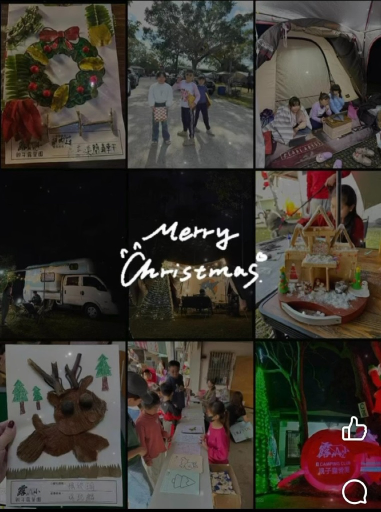
不用和營柱拔河、不必賭會不會下雨——露營車把床、廚房、小客廳與衛浴都收在一台車裡。想慢就慢、想拍就拍，一個人出門很療癒，兩個人同行也很好約；重點是節奏自己決定，把力氣留給聊天、看海與好好吃一頓。
下列畫面是風格化旅遊靈感：白天在草地把小桌攤開，用簡單爐具煮一餐清爽的；下午發呆、自拍或躺平都可以；入夜拉開燈串，靠著車邊聊天吃零食；睡醒時額頭床天窗透進光——這就是很多人說的 Van Life 精緻懶人味，其實門檻比想像中低。
實際設備與戶外套組以預約與交車說明為準；拍照道具與場地布置可再依方案加購或自備。
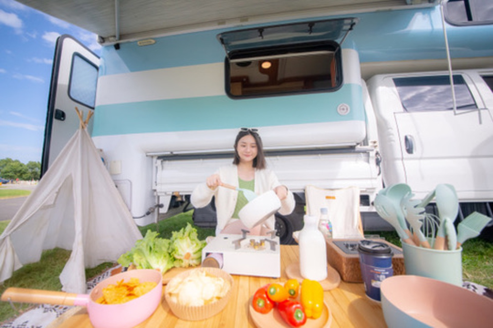
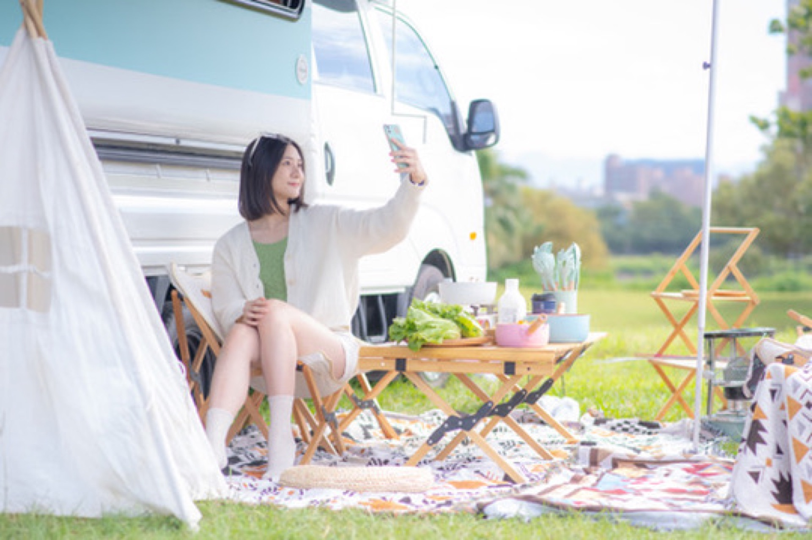
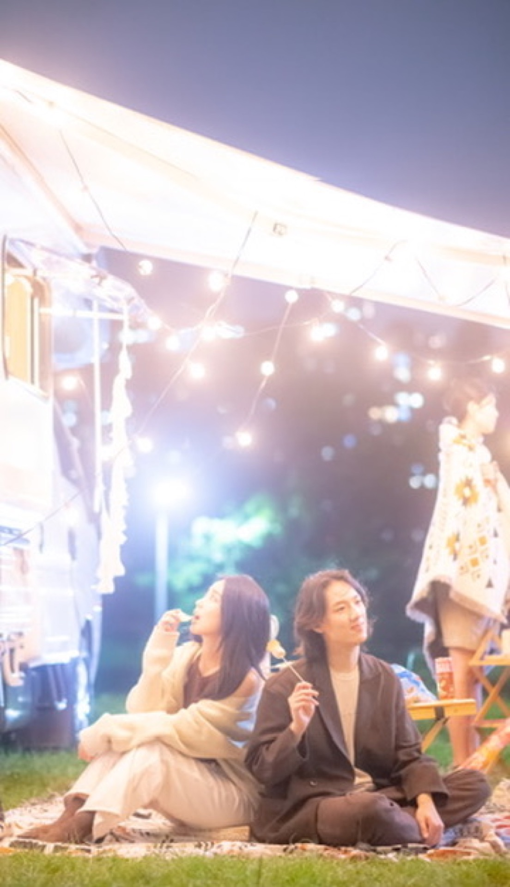
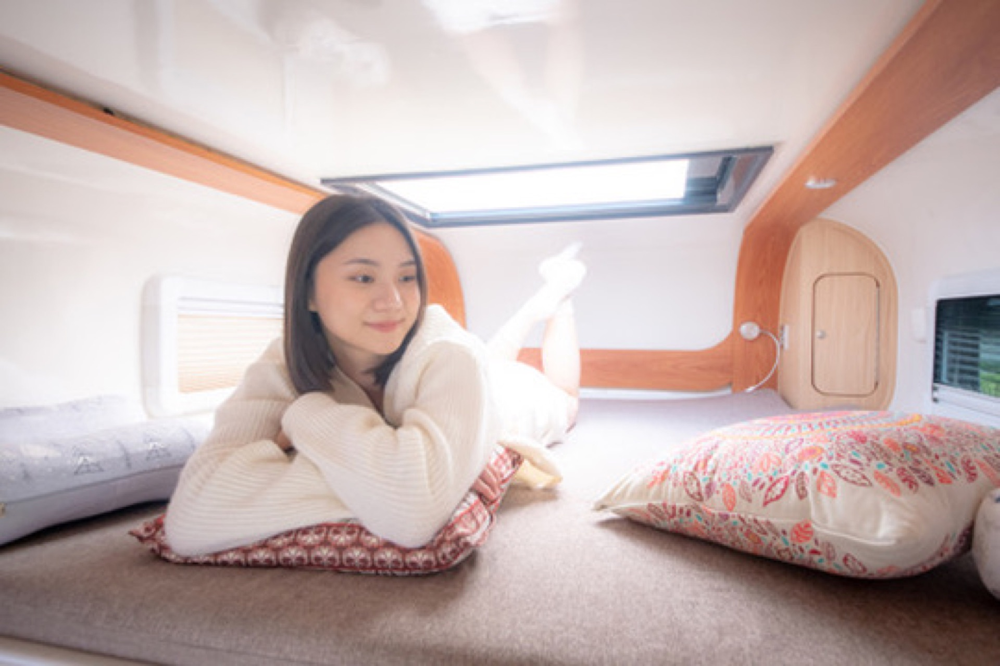
先給你 3 個簡單版本，實際安排可以再一起討論。
持續更新中。以下為目前整理的方向與外部資源。
目前先做版面與基礎文字，後續會陸續補上完整文章與地圖內容。